In this case study, is about exploratory data analysis techniques and how to use them, on a dataset that involves using smart phones, to predict human activities.
Remember, in any exploratory data analysis:
So let’s take a look at the Samsung dataset in this example and see what we can find.
The dataset comes from the University of California Irvine (UCI) machine learning archive.
In the UCI machine learning repository we can find the full description of this dataset.
For the purposes of the clustering example that we want to make, we are going to work with a subset of the human activity recongnition dataset (the training subset of data).
The following script:
X_train.txt file
(they represent a specific measurment coming from the accelerometer and
gyroscope 3-axial raw time domanin signals, later filtered and separated
into body and gravity signals, subsequently derived to obtain Jerk
signals and finally submitted to a Fast Fourier Transform to produce
other freqency domain signals). The complete list of these 561
measurments is in the features.txt file.subject_train.txt file).y_train.txt file):
samsungData.rda file.## Download the dataset.
datadir <- "4_data"
## Name of the file to be downloaded.
datasetFile <- "dataset.zip"
## Complete pathname of the file to be downloaded.
datasetPath <- file.path(datadir, datasetFile)
if(!file.exists(datasetPath)) {
dataUrl <- "https://d396qusza40orc.cloudfront.net/getdata%2Fprojectfiles%2FUCI%20HAR%20Dataset.zip"
download.file(dataUrl, destfile = datasetPath, method = "curl")
dateDownloaded <- date()
}
zipContent <- unzip(datasetPath, exdir = datadir)
zipContent
[1] "4_data/UCI HAR Dataset/activity_labels.txt"
[2] "4_data/UCI HAR Dataset/features.txt"
[3] "4_data/UCI HAR Dataset/features_info.txt"
[4] "4_data/UCI HAR Dataset/README.txt"
[5] "4_data/UCI HAR Dataset/test/Inertial Signals/body_acc_x_test.txt"
[6] "4_data/UCI HAR Dataset/test/Inertial Signals/body_acc_y_test.txt"
[7] "4_data/UCI HAR Dataset/test/Inertial Signals/body_acc_z_test.txt"
[8] "4_data/UCI HAR Dataset/test/Inertial Signals/body_gyro_x_test.txt"
[9] "4_data/UCI HAR Dataset/test/Inertial Signals/body_gyro_y_test.txt"
[10] "4_data/UCI HAR Dataset/test/Inertial Signals/body_gyro_z_test.txt"
[11] "4_data/UCI HAR Dataset/test/Inertial Signals/total_acc_x_test.txt"
[12] "4_data/UCI HAR Dataset/test/Inertial Signals/total_acc_y_test.txt"
[13] "4_data/UCI HAR Dataset/test/Inertial Signals/total_acc_z_test.txt"
[14] "4_data/UCI HAR Dataset/test/subject_test.txt"
[15] "4_data/UCI HAR Dataset/test/X_test.txt"
[16] "4_data/UCI HAR Dataset/test/y_test.txt"
[17] "4_data/UCI HAR Dataset/train/Inertial Signals/body_acc_x_train.txt"
[18] "4_data/UCI HAR Dataset/train/Inertial Signals/body_acc_y_train.txt"
[19] "4_data/UCI HAR Dataset/train/Inertial Signals/body_acc_z_train.txt"
[20] "4_data/UCI HAR Dataset/train/Inertial Signals/body_gyro_x_train.txt"
[21] "4_data/UCI HAR Dataset/train/Inertial Signals/body_gyro_y_train.txt"
[22] "4_data/UCI HAR Dataset/train/Inertial Signals/body_gyro_z_train.txt"
[23] "4_data/UCI HAR Dataset/train/Inertial Signals/total_acc_x_train.txt"
[24] "4_data/UCI HAR Dataset/train/Inertial Signals/total_acc_y_train.txt"
[25] "4_data/UCI HAR Dataset/train/Inertial Signals/total_acc_z_train.txt"
[26] "4_data/UCI HAR Dataset/train/subject_train.txt"
[27] "4_data/UCI HAR Dataset/train/X_train.txt"
[28] "4_data/UCI HAR Dataset/train/y_train.txt"
xvals <- read.table("4_data/UCI HAR Dataset/train/X_train.txt")
yvals <- read.table("4_data/UCI HAR Dataset/train/y_train.txt")
features <- read.table("4_data/UCI HAR Dataset/features.txt")
subject <- read.table("4_data/UCI HAR Dataset/train/subject_train.txt")
## Naming the 561 measurements.
colnames(xvals) <- features[, 2]
## Geting an integer vector of coded activities.
yvals <- yvals[, 1]
## Decoding the activities (transfoming yvals into a character vector).
yvals[yvals==1] <- "walk"
yvals[yvals==2] <- "walkup"
yvals[yvals==3] <- "walkdown"
yvals[yvals==4] <- "sitting"
yvals[yvals==5] <- "standing"
yvals[yvals==6] <- "laying"
class(xvals)
[1] "data.frame"
dim(xvals)
[1] 7352 561
## Adding subject and activity columns
xvals$subject <- subject[, 1]
xvals$activity <- yvals
dim(xvals)
[1] 7352 563
## Saving the final data frame and cleaning the ram.
samsungData <- xvals
save(samsungData, file = "4_data/samsungData.rda")
rm(xvals, yvals, features, subject, samsungData)We’re interested in questions such as:
We can begin inspecting:
The first 12 features and finding that they refere to body acceleration (it’s mean, standard deviation, mean absolute deviation -mad- and the maximum).
Also, we can look at the six possible activities that we want to be able to separate out based on the features collected by the accelerometer and the gyroscope.
load("4_data/samsungData.rda")
names(samsungData)[1:12]
[1] "tBodyAcc-mean()-X" "tBodyAcc-mean()-Y" "tBodyAcc-mean()-Z"
[4] "tBodyAcc-std()-X" "tBodyAcc-std()-Y" "tBodyAcc-std()-Z"
[7] "tBodyAcc-mad()-X" "tBodyAcc-mad()-Y" "tBodyAcc-mad()-Z"
[10] "tBodyAcc-max()-X" "tBodyAcc-max()-Y" "tBodyAcc-max()-Z"
table(samsungData$activity)
laying sitting standing walk walkdown walkup
1407 1286 1374 1226 986 1073 So one thing we can do really quickly is just to look at the average acceleration for the first subject.
par(mfrow = c(1, 2), mar = c(5, 4, 1, 1))
samsungData <- transform(samsungData, activity = factor(activity))
sub1 <- subset(samsungData, subject == 1)
dim(sub1)
[1] 347 563
plot(sub1[, 1], col = sub1$activity, ylab = names(sub1)[1])
plot(sub1[, 2], col = sub1$activity, ylab = names(sub1)[2])
legend("bottomright", legend = unique(sub1$activity), col = unique(sub1$activity),
pch = 1)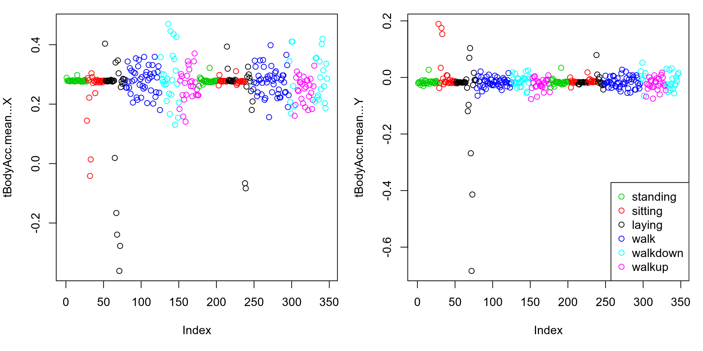
We can try to cluster the data, just on the average acceleration (of the fisrt subject).
hclust() function to do a
hierarchical clustering of these data.myplclust() function (that we’ve
seen in Module 3), just to get a prettier visualizaton of the
dendrogram.source("4_data/myplclust.R")
distanceMatrix <- dist(sub1[, 1:3])
hclustering <- hclust(distanceMatrix)
myplclust(hclustering, lab.col = unclass(sub1$activity))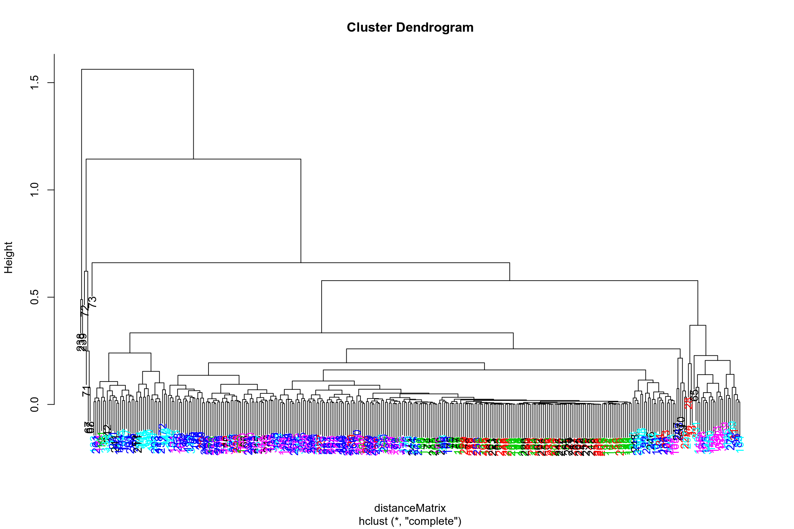
We can look now at the maximum acceleration for this subject, so we can plot columns 10 and 11.
par(mfrow = c(1, 2))
plot(sub1[, 10], pch = 19, col = sub1$activity, ylab = names(sub1)[10])
legend("topleft", legend = unique(sub1$activity),
col = unique(sub1$activity), pch = 19)
plot(sub1[, 11], pch = 19, col = sub1$activity, ylab = names(sub1)[11])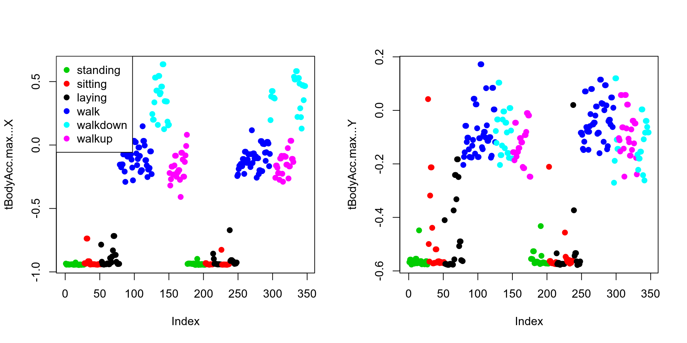
So if we cluster the data based on maximum acceleration, we can see that there’re two very clear clusters:
source("4_data/myplclust.R")
distanceMatrix <- dist(sub1[, 10:12])
hclustering <- hclust(distanceMatrix)
myplclust(hclustering, lab.col = unclass(sub1$activity))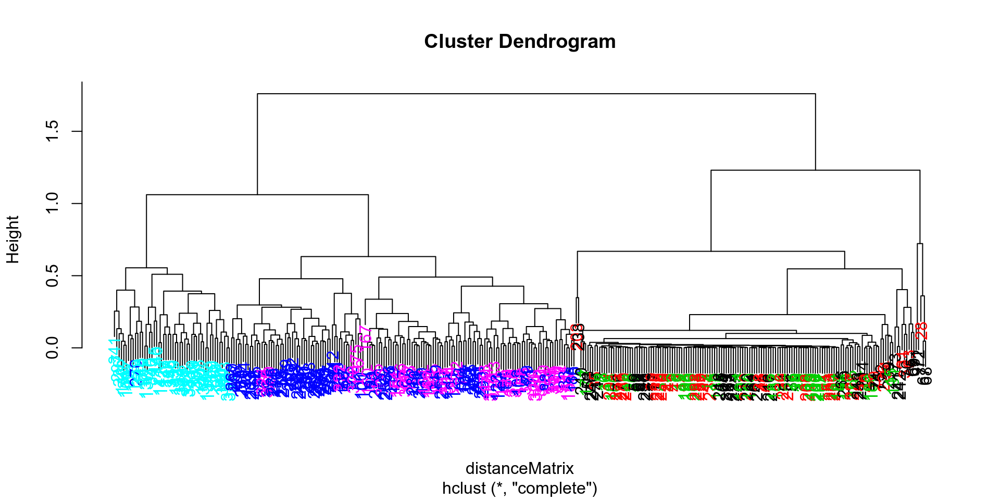
We can try a singular value decomposition on this data, just to explore what’s going on.
svd1 = svd(scale(sub1[, -c(562,563)]))
## "svd1$u is a 347 by 347 matrix, that contains the LEFT singular vectors.
## Each row in "u" corresponds to a row in the matrix sub1. Recall that in sub1
## each row has an associated activity.
dim(svd1$u)
[1] 347 347
par(mfrow = c(1, 2))
plot(svd1$u[, 1], col = sub1$activity, pch = 19)
legend("bottomright", legend = unique(sub1$activity),
col = unique(sub1$activity), pch = 19)
plot(svd1$u[, 2], col = sub1$activity, pch = 19)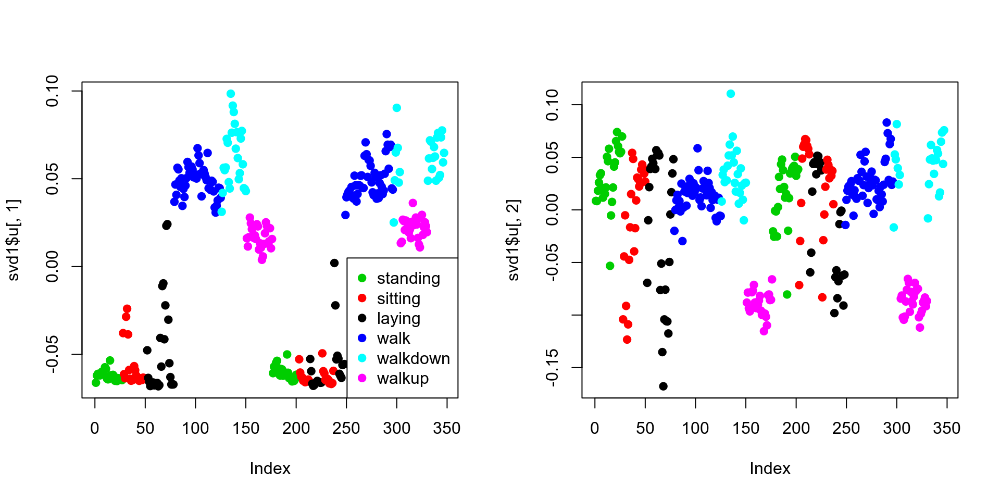
To do that we’ll have to find which of the 561 measurements is contributing to the most variation of that magenta component (walking up).
Since we’re interested in sub1 columns, we’ll look at the
RIGHT singular vectors (the columns of
svd1$v) and, in particular, the second one
since the separation of the magenta cluster stood out in the second
column of svd1$v.
plot(svd1$v[, 2], pch = 19, col = rgb(0, 0, 0, alpha = 0.5))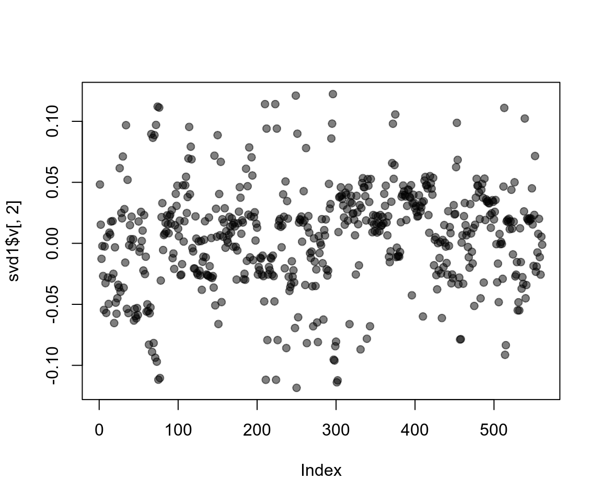
Let’s use clustering to find the feature (out of the 500+) which
contributes the most to the variation of this second column of
svd1$v.
We can use the which.max() function.
Then we can cluster based on the maximum acceleration plus this extra feature.
maxContrib <- which.max(svd1$v[, 2])
maxContrib
[1] 296
colnames(sub1)[maxContrib]
[1] "fBodyAcc.meanFreq...Z"
distanceMatrix <- dist(sub1[, c(10:12, maxContrib)])
hclustering <- hclust(distanceMatrix)
myplclust(hclustering, lab.col = unclass(sub1$activity))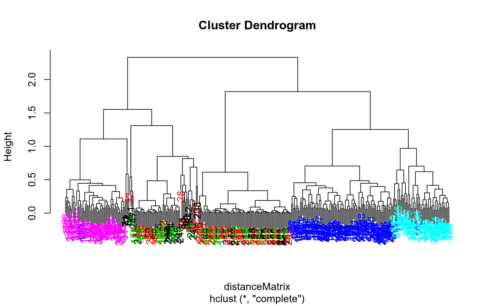
We can try another clustering technique which is K-means clustering and see if it can distinguish between the activities.
One of the things about k-means clustering that we have to take into consideration is that we can get different answers depending on how many starting values we’ve tried and how often we run it.
nstart
argument to be more than one so we can start at many
different starting points, so you can get a more optimal solution.
nstart = 100, for example, tells to try 100 random
starts and return the best one.Here is one k-means clustering with six centers specified, so we know that there are six clusters (there are six activities).
kClust <- kmeans(sub1[, -c(562, 563)], centers = 6)
table(kClust$cluster, sub1$activity)
laying sitting standing walk walkdown walkup
1 0 0 0 95 0 0
2 0 0 0 0 0 18
3 0 0 0 0 49 0
4 3 0 0 0 0 35
5 27 37 51 0 0 0
6 20 10 2 0 0 0If we try it again, we can see the arrangement’s a little bit different but, again, there are clusters that are mixtures of activities.
kClust <- kmeans(sub1[, -c(562, 563)], centers = 6, nstart = 1)
table(kClust$cluster, sub1$activity)
laying sitting standing walk walkdown walkup
1 0 0 0 0 23 0
2 8 2 0 0 0 53
3 42 45 53 0 0 0
4 0 0 0 0 26 0
5 0 0 0 45 0 0
6 0 0 0 50 0 0If we try 100 different starting values and take the optimal solution from this 100, we see that things seem to separate out a little bit better, not much better than last time.
kClust <- kmeans(sub1[, -c(562, 563)], centers = 6, nstart = 100)
table(kClust$cluster, sub1$activity)
laying sitting standing walk walkdown walkup
1 0 0 0 95 0 0
2 18 10 2 0 0 0
3 0 0 0 0 49 0
4 29 0 0 0 0 0
5 0 37 51 0 0 0
6 3 0 0 0 0 53If we do a second try with 100 starting values, it will probably be our best effort.
kClust <- kmeans(sub1[, -c(562,563)], centers = 6, nstart = 100)
table <- table(kClust$cluster,sub1$activity)
table
laying sitting standing walk walkdown walkup
1 3 0 0 0 0 53
2 29 0 0 0 0 0
3 0 37 51 0 0 0
4 0 0 0 95 0 0
5 0 0 0 0 49 0
6 18 10 2 0 0 0We can see where the cluster centers are.
The idea is that each of the clusters has a mean value or a center in this 561 dimensional space.
We can see which features of these 561 features seem to drive the location of the center for that given cluster.
So let’s plot the cluster which seems to correspond to laying.
## Tracking the cluster assigned to 'laying'.
kClust$size
[1] 56 29 88 95 49 30
laying_clus <- which(kClust$size == 29) # or which(table[, 'laying'] == 29)
laying_clus
[1] 2
dim(kClust$centers)
[1] 6 561
plot(kClust$centers[laying_clus, 1:10], pch = 19, ylab = "Laying Cluster Center",
xlab = "")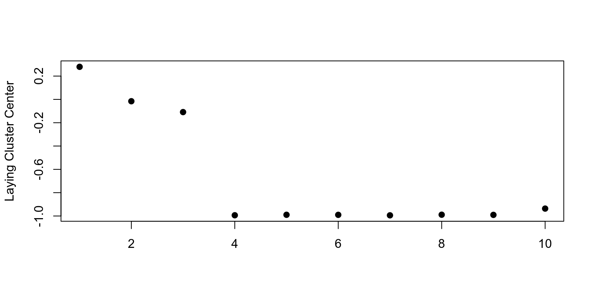
Here we can see the cluster center for the walk variable.
## Tracking the cluster assigned to "walk".
walking_clus <- which(kClust$size == 95) # or which(table[, "walk"] == 95)
walking_clus
[1] 4
plot(kClust$centers[walking_clus, 1:10], pch = 19, ylab = "Walk Cluster Center",
xlab = "")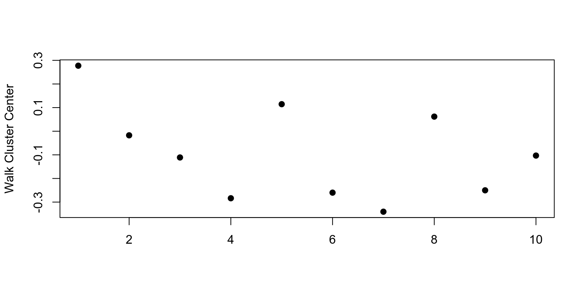
Cluster centers allow us to see:
This is a just a short demonstration to show how we can take a large data set with lots of features and lots of observations and start to explore it a little bit with various clustering techniques.
We used Hierarchical clustering, used K-means clustering and we used the singular value decomposition to look at various features of this data set.
Given what we’ve learned here, we may want to be interested in following up on what separates out the various non movement activity.
Let’s remove from disk the unzipped directory (283 MB) we don’t use anymore.
unzipped_dir <- file.path(datadir, "UCI HAR Dataset")
if(file.exists(unzipped_dir)) {
unlink(unzipped_dir, recursive = TRUE)
cat("Unzipped directory has been deleted")
}
Unzipped directory has been deletedThis chapter presents an example data analysis looking at changes in fine particulate matter (PM) air pollution in the United States using the Environmental Protection Agencies freely available national monitoring data.
We want to describe the changes in fine particle (PM2.5) outdoor air pollution in the US between the years 1999 and 2012.
Our overall hypothesis is that outdoor PM2.5 has decreased on average across the U.S. due to nationwide regulatory requirements arising from the Clean Air Act.
To investigate this hypothesis, we obtained PM2.5 data from the US Environmental Protection Agency which is collected from monitors sited across the US, for the years 1999 and 2012.
From these data, we found that:
From the EPA Air Quality System we obtained data on fine particulate matter air pollution (PM2.5) that is monitored across the US as part of the nationwide PM monitoring network.
We downloaded the files for the years 1999
(RD_501_88101_1999-0.txt) and 2012
(RD_501_88101_2012-0.txt), and zipped them into the
RD_501_88101.zip file using these commands:
library(zip)
downloaded_files <- list.files(path = "4_data/", pattern = "0.txt$", full.names = TRUE)
## [1] "4_data//RD_501_88101_1999-0.txt" "4_data//RD_501_88101_2012-0.txt"
zipr(zipfile = "4_data/RD_501_88101.zip", files = downloaded_files)datadir <- "4_data"
zipped_file <- "RD_501_88101.zip"
zipped_file_path <- file.path(datadir, zipped_file)
zipContent <- unzip(zipped_file_path, exdir = datadir)
zipContent
[1] "4_data/RD_501_88101_1999-0.txt" "4_data/RD_501_88101_2012-0.txt"The data is a delimited file were:
|
character.library(readr)
pm0 <- read_delim("4_data/RD_501_88101_1999-0.txt",
delim = "|",
comment = "#",
col_names = FALSE,
na = "")
Rows: 117421 Columns: 28
── Column specification ───────────────────────────────────────────────────────────────────
Delimiter: "|"
chr (7): X1, X2, X3, X4, X5, X14, X17
dbl (8): X6, X7, X8, X9, X10, X11, X13, X15
lgl (12): X16, X18, X19, X20, X21, X22, X23, X24, X25, X26, X27, X28
time (1): X12
ℹ Use `spec()` to retrieve the full column specification for this data.
ℹ Specify the column types or set `show_col_types = FALSE` to quiet this message.
dim(pm0)
[1] 117421 28
head(pm0[, 1:13])
# A tibble: 6 × 13
X1 X2 X3 X4 X5 X6 X7 X8 X9 X10 X11 X12
<chr> <chr> <chr> <chr> <chr> <dbl> <dbl> <dbl> <dbl> <dbl> <dbl> <time>
1 RD I 01 027 0001 88101 1 7 105 120 19990103 00'00"
2 RD I 01 027 0001 88101 1 7 105 120 19990106 00'00"
3 RD I 01 027 0001 88101 1 7 105 120 19990109 00'00"
4 RD I 01 027 0001 88101 1 7 105 120 19990112 00'00"
5 RD I 01 027 0001 88101 1 7 105 120 19990115 00'00"
6 RD I 01 027 0001 88101 1 7 105 120 19990118 00'00"
# … with 1 more variable: X13 <dbl>We then attach the column headers to the dataset and make sure that they are properly formated for R data frames.
make.names() function
which basically takes an arbitrary string and turn it into a valid
column name for a data frame.cnames <- readLines("4_data/RD_501_88101_1999-0.txt", 1)
cnames
[1] "# RD|Action Code|State Code|County Code|Site ID|Parameter|POC|Sample Duration|Unit|Method|Date|Start Time|Sample Value|Null Data Code|Sampling Frequency|Monitor Protocol (MP) ID|Qualifier - 1|Qualifier - 2|Qualifier - 3|Qualifier - 4|Qualifier - 5|Qualifier - 6|Qualifier - 7|Qualifier - 8|Qualifier - 9|Qualifier - 10|Alternate Method Detectable Limit|Uncertainty"
cnames <- strsplit(cnames, "|", fixed = TRUE) # It's a fixed pattern, not a regex.
cnames
[[1]]
[1] "# RD" "Action Code"
[3] "State Code" "County Code"
[5] "Site ID" "Parameter"
[7] "POC" "Sample Duration"
[9] "Unit" "Method"
[11] "Date" "Start Time"
[13] "Sample Value" "Null Data Code"
[15] "Sampling Frequency" "Monitor Protocol (MP) ID"
[17] "Qualifier - 1" "Qualifier - 2"
[19] "Qualifier - 3" "Qualifier - 4"
[21] "Qualifier - 5" "Qualifier - 6"
[23] "Qualifier - 7" "Qualifier - 8"
[25] "Qualifier - 9" "Qualifier - 10"
[27] "Alternate Method Detectable Limit" "Uncertainty"
## Ensure names are properly formatted
names(pm0) <- make.names(cnames[[1]])
pm0
# A tibble: 117,421 × 28
X..RD Action.Code State.Code County.Code Site.ID Parameter POC
<chr> <chr> <chr> <chr> <chr> <dbl> <dbl>
1 RD I 01 027 0001 88101 1
2 RD I 01 027 0001 88101 1
3 RD I 01 027 0001 88101 1
4 RD I 01 027 0001 88101 1
5 RD I 01 027 0001 88101 1
6 RD I 01 027 0001 88101 1
7 RD I 01 027 0001 88101 1
8 RD I 01 027 0001 88101 1
9 RD I 01 027 0001 88101 1
10 RD I 01 027 0001 88101 1
# … with 117,411 more rows, and 21 more variables: Sample.Duration <dbl>,
# Unit <dbl>, Method <dbl>, Date <dbl>, Start.Time <time>,
# Sample.Value <dbl>, Null.Data.Code <chr>, Sampling.Frequency <dbl>,
# Monitor.Protocol..MP..ID <lgl>, Qualifier...1 <chr>, Qualifier...2 <lgl>,
# Qualifier...3 <lgl>, Qualifier...4 <lgl>, Qualifier...5 <lgl>,
# Qualifier...6 <lgl>, Qualifier...7 <lgl>, Qualifier...8 <lgl>,
# Qualifier...9 <lgl>, Qualifier...10 <lgl>, …The column we are interested in is the Sample.Value column which contains the PM2.5 measurements.
x0 <- pm0$Sample.Value
summary(x0)
Min. 1st Qu. Median Mean 3rd Qu. Max. NA's
0.00 7.20 11.50 13.74 17.90 157.10 13217 Missing values are a common problem with environmental data and so we check to see what proportion of the observations are missing.
## Are missing values important here?
mean(is.na(x0))
[1] 0.1125608pm1 <- read_delim("4_data/RD_501_88101_2012-0.txt",
delim = "|",
comment = "#",
col_names = FALSE,
na = "")
Warning: One or more parsing issues, see `problems()` for details
Rows: 1304287 Columns: 28
── Column specification ───────────────────────────────────────────────────────────────────
Delimiter: "|"
chr (8): X1, X2, X3, X4, X5, X14, X17, X18
dbl (9): X6, X7, X8, X9, X10, X11, X13, X15, X27
lgl (10): X16, X19, X20, X21, X22, X23, X24, X25, X26, X28
time (1): X12
ℹ Use `spec()` to retrieve the full column specification for this data.
ℹ Specify the column types or set `show_col_types = FALSE` to quiet this message.
dim(pm1)
[1] 1304287 28
head(pm1[, 1:13])
# A tibble: 6 × 13
X1 X2 X3 X4 X5 X6 X7 X8 X9 X10 X11 X12
<chr> <chr> <chr> <chr> <chr> <dbl> <dbl> <dbl> <dbl> <dbl> <dbl> <time>
1 RD I 01 003 0010 88101 1 7 105 118 20120101 00'00"
2 RD I 01 003 0010 88101 1 7 105 118 20120104 00'00"
3 RD I 01 003 0010 88101 1 7 105 118 20120107 00'00"
4 RD I 01 003 0010 88101 1 7 105 118 20120110 00'00"
5 RD I 01 003 0010 88101 1 7 105 118 20120113 00'00"
6 RD I 01 003 0010 88101 1 7 105 118 20120116 00'00"
# … with 1 more variable: X13 <dbl>
names(pm1) <- make.names(cnames[[1]])
pm1
# A tibble: 1,304,287 × 28
X..RD Action.Code State.Code County.Code Site.ID Parameter POC
<chr> <chr> <chr> <chr> <chr> <dbl> <dbl>
1 RD I 01 003 0010 88101 1
2 RD I 01 003 0010 88101 1
3 RD I 01 003 0010 88101 1
4 RD I 01 003 0010 88101 1
5 RD I 01 003 0010 88101 1
6 RD I 01 003 0010 88101 1
7 RD I 01 003 0010 88101 1
8 RD I 01 003 0010 88101 1
9 RD I 01 003 0010 88101 1
10 RD I 01 003 0010 88101 1
# … with 1,304,277 more rows, and 21 more variables: Sample.Duration <dbl>,
# Unit <dbl>, Method <dbl>, Date <dbl>, Start.Time <time>,
# Sample.Value <dbl>, Null.Data.Code <chr>, Sampling.Frequency <dbl>,
# Monitor.Protocol..MP..ID <lgl>, Qualifier...1 <chr>, Qualifier...2 <chr>,
# Qualifier...3 <lgl>, Qualifier...4 <lgl>, Qualifier...5 <lgl>,
# Qualifier...6 <lgl>, Qualifier...7 <lgl>, Qualifier...8 <lgl>,
# Qualifier...9 <lgl>, Qualifier...10 <lgl>, …
x1 <- pm1$Sample.Value
summary(x1)
Min. 1st Qu. Median Mean 3rd Qu. Max. NA's
-10.00 4.00 7.63 9.14 12.00 908.97 73133
mean(is.na(x1)) # Only 5% of NAs.
[1] 0.05607125Since we will be comparing the two years of data, it makes sense to combine them into a single data frame.
And let’s also:
Sample.Value variable to a more sensible
PM.library(dplyr)
pm <- rbind(pm0, pm1)
pm <- mutate(pm, year = factor(rep(c(1999, 2012), c(nrow(pm0), nrow(pm1))))) %>%
rename(PM = Sample.Value)
rm(pm0, pm1)In order to show aggregate changes in PM across the entire monitoring network, we can make boxplots of all monitor values in 1999 and 2012.
library(ggplot2)
## Take a random smaple because it's faster.
set.seed(2015)
idx <- sample(nrow(pm), 1000)
qplot(year, log2(PM), data = pm[idx, ], geom = "boxplot")
Warning in FUN(X[[i]], ...): Se han producido NaNs
Warning in FUN(X[[i]], ...): Se han producido NaNs
Warning: Removed 89 rows containing non-finite values (stat_boxplot).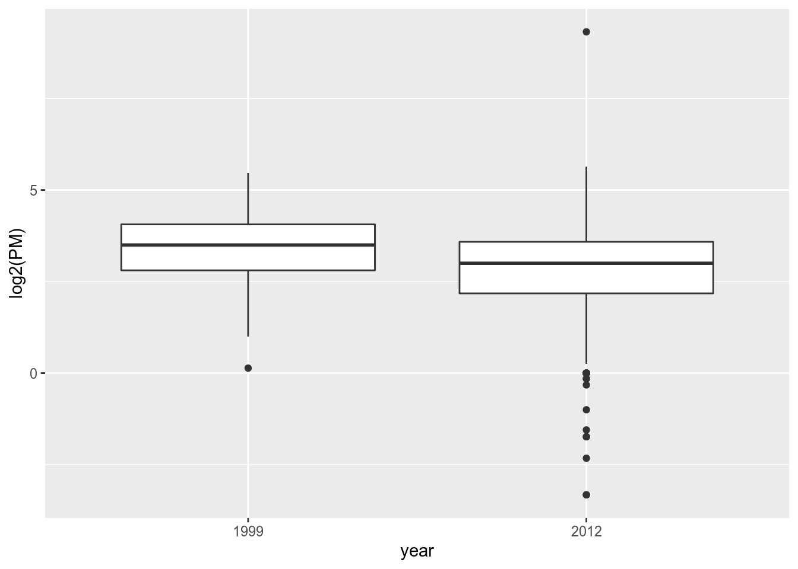
We can make some summaries of the two year’s worth data to get the actual numbers.
with(pm, tapply(PM, year, summary))
$`1999`
Min. 1st Qu. Median Mean 3rd Qu. Max. NA's
0.00 7.20 11.50 13.74 17.90 157.10 13217
$`2012`
Min. 1st Qu. Median Mean 3rd Qu. Max. NA's
-10.00 4.00 7.63 9.14 12.00 908.97 73133 We can investigate that somewhat to see if there is anything we should worry about.
filter(pm, year == "2012") %>%
summarize(sum.negatives = sum(PM < 0, na.rm = TRUE),
prop.negatives = mean(PM < 0, na.rm = TRUE))
# A tibble: 1 × 2
sum.negatives prop.negatives
<int> <dbl>
1 26474 0.0215In order to investigate this a step further we can:
Date format for easier manipulation.library(lubridate)
neg.inspect <- filter(pm, year == "2012") %>%
mutate(negative = PM < 0, date = ymd(Date)) %>%
select(date, negative)
neg.inspect
# A tibble: 1,304,287 × 2
date negative
<date> <lgl>
1 2012-01-01 FALSE
2 2012-01-04 FALSE
3 2012-01-07 FALSE
4 2012-01-10 FALSE
5 2012-01-13 FALSE
6 2012-01-16 FALSE
7 2012-01-19 FALSE
8 2012-01-22 FALSE
9 2012-01-25 FALSE
10 2012-01-28 FALSE
# … with 1,304,277 more rowsmutate(neg.inspect, month = factor(month.name[month(date)],
levels = month.name)) %>%
group_by(month) %>%
summarize(pct.negative = mean(negative, na.rm = TRUE) * 100)
# A tibble: 10 × 2
month pct.negative
<fct> <dbl>
1 January 2.97
2 February 2.43
3 March 2.41
4 April 2.18
5 May 1.73
6 June 2.56
7 July 0.792
8 August 1.06
9 September 1.52
10 October 0 One issue with the previous analysis is that the monitoring network could have changed in the time period between 1999 and 2012.
In this section we will focus on a single monitor in New York State to see if PM levels at that monitor decreased from 1999 to 2012.
Our first task is to identify a monitor in New York State that has data in 1999 and 2012 (not all monitors operated during both time periods).
State.Code == 36).County.Code, the
Site.ID (i.e. monitor number) and the year
variables.sites <- filter(pm, State.Code == 36) %>%
select(County.Code, Site.ID, year) %>%
unique
sites
# A tibble: 51 × 3
County.Code Site.ID year
<chr> <chr> <fct>
1 001 0005 1999
2 001 0012 1999
3 005 0073 1999
4 005 0080 1999
5 005 0083 1999
6 005 0110 1999
7 013 0011 1999
8 027 1004 1999
9 029 0002 1999
10 029 0005 1999
# … with 41 more rowssite.code that combines the county code
and the site ID into a single string.sites <- mutate(sites, site.code = paste(County.Code, Site.ID, sep = "."))
str(sites)
tibble [51 × 4] (S3: tbl_df/tbl/data.frame)
$ County.Code: chr [1:51] "001" "001" "005" "005" ...
$ Site.ID : chr [1:51] "0005" "0012" "0073" "0080" ...
$ year : Factor w/ 2 levels "1999","2012": 1 1 1 1 1 1 1 1 1 1 ...
$ site.code : chr [1:51] "001.0005" "001.0012" "005.0073" "005.0080" ...site.year <- with(sites, split(site.code, year))
site.year
$`1999`
[1] "001.0005" "001.0012" "005.0073" "005.0080" "005.0083" "005.0110"
[7] "013.0011" "027.1004" "029.0002" "029.0005" "029.1007" "031.0003"
[13] "047.0011" "047.0076" "055.6001" "059.0005" "059.0008" "059.0011"
[19] "061.0010" "061.0056" "061.0062" "063.2008" "065.2001" "067.0019"
[25] "067.1015" "081.0094" "081.0097" "085.0055" "085.0067" "089.3001"
[31] "093.0003" "101.0003" "103.0001"
$`2012`
[1] "001.0005" "001.0012" "005.0080" "005.0133" "013.0011" "029.0005"
[7] "031.0003" "047.0122" "055.1007" "061.0079" "061.0134" "063.2008"
[13] "067.1015" "071.0002" "081.0124" "085.0055" "101.0003" "103.0002"
both <- intersect(site.year[[1]], site.year[[2]])
both
[1] "001.0005" "001.0012" "005.0080" "013.0011" "029.0005" "031.0003"
[7] "063.2008" "067.1015" "085.0055" "101.0003"Now let’s choose one of those monitors.
count <- mutate(pm, site.code = paste(County.Code, Site.ID, sep = ".")) %>%
filter(site.code %in% both)
count
# A tibble: 1,745 × 30
X..RD Action.Code State.Code County.Code Site.ID Parameter POC
<chr> <chr> <chr> <chr> <chr> <dbl> <dbl>
1 RD I 06 101 0003 88101 1
2 RD I 06 101 0003 88101 1
3 RD I 06 101 0003 88101 1
4 RD I 06 101 0003 88101 1
5 RD I 06 101 0003 88101 1
6 RD I 06 101 0003 88101 1
7 RD I 06 101 0003 88101 1
8 RD I 06 101 0003 88101 1
9 RD I 06 101 0003 88101 1
10 RD I 06 101 0003 88101 1
# … with 1,735 more rows, and 23 more variables: Sample.Duration <dbl>,
# Unit <dbl>, Method <dbl>, Date <dbl>, Start.Time <time>, PM <dbl>,
# Null.Data.Code <chr>, Sampling.Frequency <dbl>,
# Monitor.Protocol..MP..ID <lgl>, Qualifier...1 <chr>, Qualifier...2 <chr>,
# Qualifier...3 <lgl>, Qualifier...4 <lgl>, Qualifier...5 <lgl>,
# Qualifier...6 <lgl>, Qualifier...7 <lgl>, Qualifier...8 <lgl>,
# Qualifier...9 <lgl>, Qualifier...10 <lgl>, …group_by(count, site.code) %>% summarize(n = n())
# A tibble: 10 × 2
site.code n
<chr> <int>
1 001.0005 186
2 001.0012 92
3 005.0080 92
4 013.0011 213
5 029.0005 94
6 031.0003 198
7 063.2008 152
8 067.1015 153
9 085.0055 38
10 101.0003 527pmsub <- filter(pm, State.Code == "36" & County.Code == "063" & Site.ID == "2008") %>%
select(Date, year, PM) %>%
mutate(Date = ymd(Date), yday = yday(Date))
pmsub
# A tibble: 152 × 4
Date year PM yday
<date> <fct> <dbl> <dbl>
1 1999-07-02 1999 NA 183
2 1999-07-05 1999 NA 186
3 1999-07-08 1999 4.9 189
4 1999-07-11 1999 4.8 192
5 1999-07-14 1999 24.8 195
6 1999-07-17 1999 40 198
7 1999-07-20 1999 NA 201
8 1999-07-23 1999 NA 204
9 1999-07-26 1999 16.6 207
10 1999-07-29 1999 NA 210
# … with 142 more rowsNow we plot the time series data of PM for the monitor in both years.
qplot(yday, PM, data = pmsub, facets = . ~ year, xlab = "Day of the year")
Warning: Removed 35 rows containing missing values (geom_point).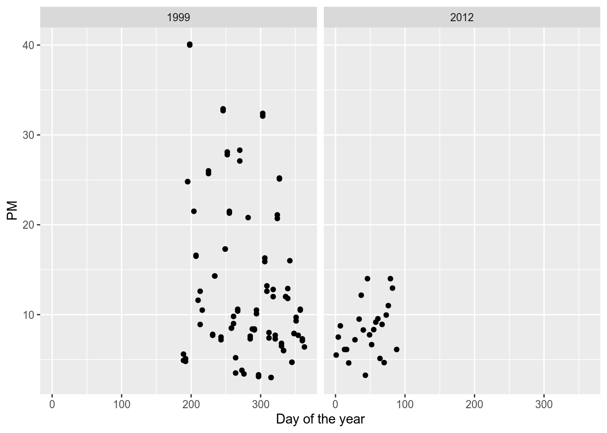
qplot(year, PM, data = pmsub, geom = "boxplot")
Warning: Removed 35 rows containing non-finite values (stat_boxplot).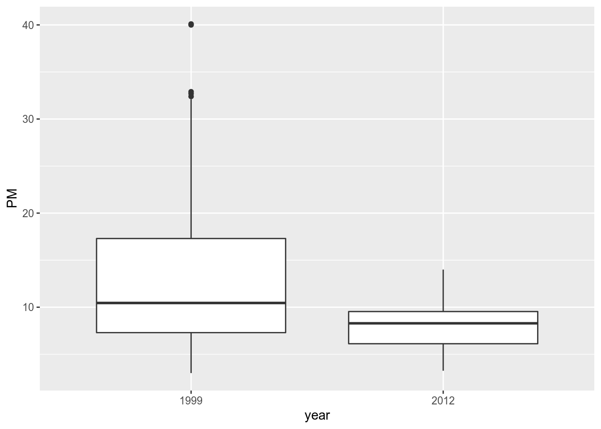
Although ambient air quality standards are set at the federal level in the U.S. and hence affect the entire country, the actual reduction and management of PM is left to the individual states.
States that are not “in attainment” have to develop a plan to reduce PM so that they are in attainment (eventually).
Therefore, it might be useful to examine changes in PM at the state level.
This analysis falls somewhere in between looking at the entire country all at once and looking at an individual monitor.
What we do here is calculate the mean of PM for each state in 1999 and 2012.
mn <- group_by(pm, year, State.Code) %>% summarize(PM = mean(PM, na.rm = TRUE))
`summarise()` has grouped output by 'year'. You can override using the `.groups`
argument.
mn
# A tibble: 105 × 3
# Groups: year [2]
year State.Code PM
<fct> <chr> <dbl>
1 1999 01 20.0
2 1999 02 6.67
3 1999 04 10.8
4 1999 05 15.7
5 1999 06 17.7
6 1999 08 7.53
7 1999 09 13.3
8 1999 10 14.5
9 1999 11 15.8
10 1999 12 11.1
# … with 95 more rows
tail(mn)
# A tibble: 6 × 3
# Groups: year [1]
year State.Code PM
<fct> <chr> <dbl>
1 2012 51 8.71
2 2012 53 6.36
3 2012 54 9.82
4 2012 55 7.91
5 2012 56 4.01
6 2012 72 6.05Now make a plot that shows:
qplot(xyear, PM, data = mutate(mn, xyear = as.numeric(as.character(year))),
color = factor(State.Code),
geom = c("point", "line"))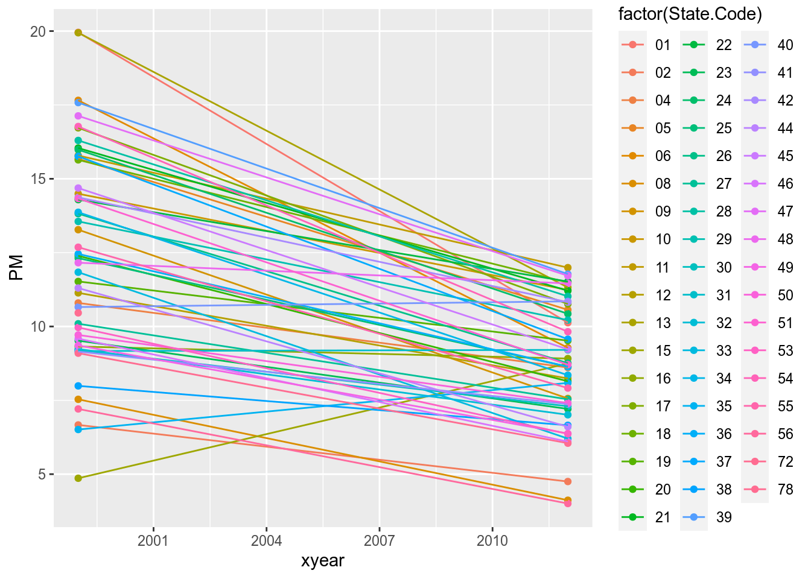
Let’s remove from disk the unzipped data (8,5 MB + 91 MB) we don’t use anymore.
unzipped_files <- list.files(path = "4_data/", pattern = "0.txt$", full.names = TRUE)
unzipped_files
[1] "4_data//RD_501_88101_1999-0.txt" "4_data//RD_501_88101_2012-0.txt"
file.remove(unzipped_files)
[1] TRUE TRUEsessionInfo()
R version 3.6.3 (2020-02-29)
Platform: x86_64-pc-linux-gnu (64-bit)
Running under: Ubuntu 18.04.6 LTS
Matrix products: default
BLAS: /usr/lib/x86_64-linux-gnu/blas/libblas.so.3.7.1
LAPACK: /usr/lib/x86_64-linux-gnu/lapack/liblapack.so.3.7.1
locale:
[1] LC_CTYPE=es_AR.UTF-8 LC_NUMERIC=C
[3] LC_TIME=es_AR.UTF-8 LC_COLLATE=es_AR.UTF-8
[5] LC_MONETARY=es_AR.UTF-8 LC_MESSAGES=es_AR.UTF-8
[7] LC_PAPER=es_AR.UTF-8 LC_NAME=es_AR.UTF-8
[9] LC_ADDRESS=es_AR.UTF-8 LC_TELEPHONE=es_AR.UTF-8
[11] LC_MEASUREMENT=es_AR.UTF-8 LC_IDENTIFICATION=es_AR.UTF-8
attached base packages:
[1] stats graphics grDevices utils datasets methods base
other attached packages:
[1] impute_1.60.0 RColorBrewer_1.1-2 maps_3.3.0 stringr_1.4.0
[5] lubridate_1.9.2 quantmod_0.4.20 TTR_0.24.2 xts_0.12.1
[9] zoo_1.8-9 readr_2.0.1 tidyr_1.2.0 dplyr_1.0.8
[13] reshape2_1.4.4 Hmisc_4.4-0 ggplot2_3.3.5 Formula_1.2-3
[17] survival_3.4-0 lattice_0.20-45 jpeg_0.1-8.1 gitignore_0.1.3
[21] rhdf5_2.30.1 httr_1.4.2 httpuv_1.6.3 sqldf_0.4-11
[25] RSQLite_2.2.0 gsubfn_0.7 proto_1.0.0 DBI_1.1.1
[29] data.table_1.14.0 jsonlite_1.7.2 XML_3.99-0.3 xlsx_0.6.3
[33] plyr_1.8.6
loaded via a namespace (and not attached):
[1] nlme_3.1-162 bit64_4.0.5 tools_3.6.3
[4] backports_1.4.1 bslib_0.3.0 utf8_1.2.2
[7] R6_2.5.1 KernSmooth_2.23-20 rpart_4.1.19
[10] mgcv_1.8-41 colorspace_2.0-3 nnet_7.3-18
[13] withr_2.5.0 tidyselect_1.2.0 gridExtra_2.3
[16] bit_4.0.4 curl_4.3.2 compiler_3.6.3
[19] chron_2.3-55 cli_3.6.0 formatR_1.14
[22] htmlTable_2.0.1 labeling_0.4.2 sass_0.4.0
[25] scales_1.1.1 checkmate_2.0.0 askpass_1.1
[28] digest_0.6.29 foreign_0.8-76 rmarkdown_2.11
[31] base64enc_0.1-3 pkgconfig_2.0.3 htmltools_0.5.2
[34] fastmap_1.1.0 highr_0.9 htmlwidgets_1.5.4
[37] rlang_1.0.6 rstudioapi_0.13 farver_2.1.0
[40] jquerylib_0.1.4 generics_0.1.2 vroom_1.5.5
[43] acepack_1.4.1 magrittr_2.0.2 Matrix_1.5-1
[46] Rcpp_1.0.7 munsell_0.5.0 Rhdf5lib_1.8.0
[49] fansi_1.0.2 clipr_0.7.1 lifecycle_1.0.3
[52] stringi_1.7.6 yaml_2.2.1 grid_3.6.3
[55] blob_1.2.2 parallel_3.6.3 promises_1.2.0.1
[58] crayon_1.5.0 splines_3.6.3 xlsxjars_0.6.1
[61] hms_1.1.0 knitr_1.41 pillar_1.7.0
[64] tcltk_3.6.3 glue_1.6.2 evaluate_0.19
[67] latticeExtra_0.6-29 vctrs_0.5.2 png_0.1-7
[70] tzdb_0.3.0 gtable_0.3.0 openssl_2.0.5
[73] purrr_0.3.4 assertthat_0.2.1 xfun_0.36
[76] later_1.3.0 viridisLite_0.4.0 tibble_3.1.8
[79] rJava_0.9-13 memoise_1.1.0 cluster_2.1.4
[82] timechange_0.2.0 ellipsis_0.3.2 Copyright © 2020 por Christian A. Karanicolas. Todos los derechos reservados. La elaboración de este sitio ha tenido como fuente principal de información el curso de Especialización en Ciencias de Datos brindado por la Johns Hopkins University a través de Coursera.